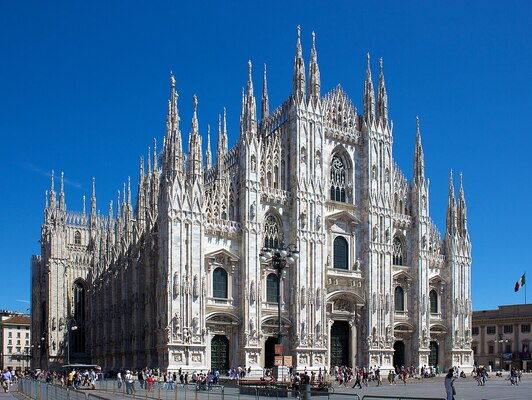

Home
Bem-vindo a Milão, a vibrante capital da Lombardia e um dos principais centros culturais e econômicos da Itália! Esta cidade única combina tradição e modernidade, oferecendo uma rica herança histórica, uma cena artística efervescente e uma gastronomia deliciosa. Desde a majestosa Catedral de Milão até as boutiques de moda de renome mundial, há sempre algo novo a descobrir. Venha explorar os encantos de Milão e deixe-se envolver pela sua energia contagiante!
Milão é também um destino imperdível para os amantes da arte e da arquitetura. O icónico Teatro alla Scala, um dos teatros de ópera mais prestigiados do mundo, atrai aficionados de música clássica e ballet. Nas proximidades, a Igreja de Santa Maria delle Grazie abriga a famosa obra-prima de Leonardo da Vinci, "A Última Ceia". Além disso, os visitantes podem passear pelas ruas charmosas do bairro de Brera, conhecido pelas suas galerias de arte, cafés acolhedores e atmosfera boémia. Cada canto de Milão revela uma história fascinante que reflete o espírito inovador desta cidade vibrante.
Acede à: Wikipedia